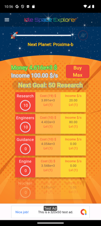
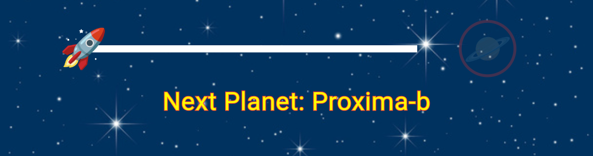
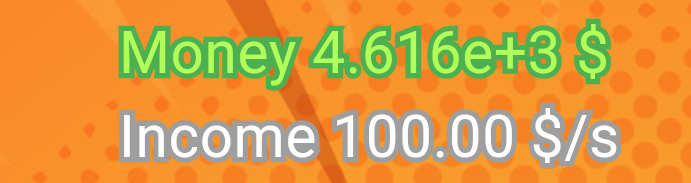
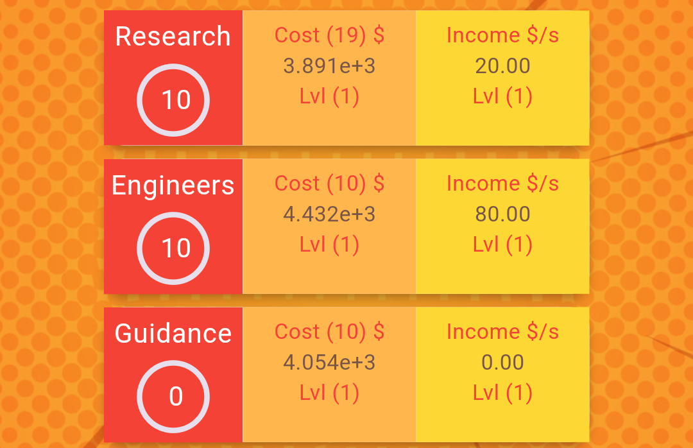
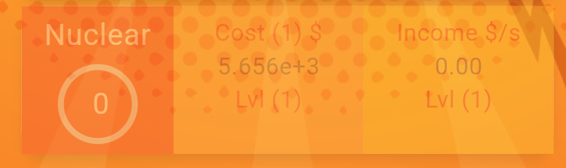
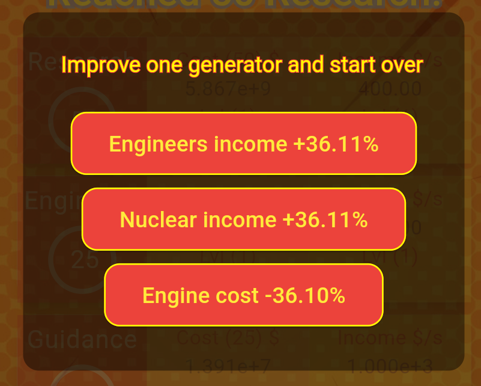
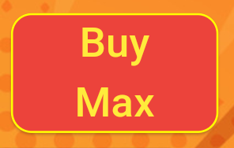
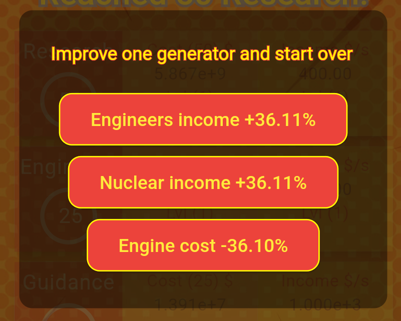
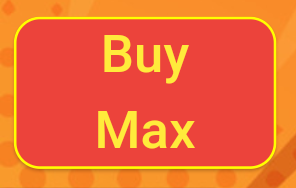
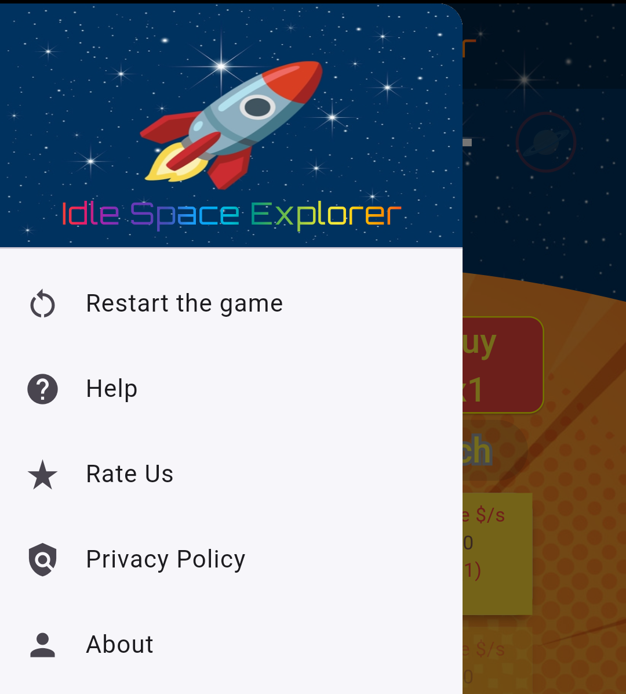

Help
Idle Space Explorer is an incremental idle game with an undergoing theme of space exploration.

Reach the next planet
Your goal is helping the rocket-ship to reach the next planet. Once the planet has been reached, the small planet icon on the right will turn to clickable, allowing you to proceed on the next level.

The quickest way to do so, it is increasing the income speed (per second), buying generators of income, based on your current money availability. Income and money are expressed in standard scientific notation.

Generators (included in a scrollable list), based on their quantity, hierarchy position and internal level, will increase the income speed, generating more money and helping the rocket to move faster.

The red quadrant contains the name of the generator and a tracker of the quantity needed of generators, to unlock an income boost once the value is reached. The orange quadrant contains the cost of generators to buy in standard scientific notation. For example, for the Research generator in the image, in order to buy 19 of this generator you will need 3.891e+3 $. When you are able to spend that money, the generator will look clickable without opacity. If there are not enough money to buy it, it will look opaque and not clickable as for the below image.

The yellow quadrant contains the current income generated per second by the generator based on its quantity.
Both the orange and yellow quadrants include the Lvl label (Level) of the bonus applied on it. These level values can be changed once a bonus for a specific generator is reached. For example, on the below image you will be able to unlock a bonus once 50 Research generators have been bought.
 The label will turn to blinking and clickable, opening a dialog.

These dialog contains random boost for incomes and price cuts for the used generators until that point. Note that these level value will be reset once a new planet travel starts. You can buy generators based on multiplicity: x1, x10, x100, Next, Max using the below button.

The cost quadrant will adapt the price on each generator based on the chosen multiplier.
The label will turn to blinking and clickable, opening a dialog.

These dialog contains random boost for incomes and price cuts for the used generators until that point. Note that these level value will be reset once a new planet travel starts. You can buy generators based on multiplicity: x1, x10, x100, Next, Max using the below button.

The cost quadrant will adapt the price on each generator based on the chosen multiplier.
- x1 - adapts the cost to buy one generator
- x10 - adapts the cost to buy ten generators
- x100 - adapts the cost to buy one hundred generators
- Next - adapts the cost to buy the required number to reach the next income boost for that generator
- Max - adapts the cost to buy as much as you can generators based on the current available money
Deck menu
The deck menu includes information related to the app, a link to the policy, a link this help page and a Restart the game option.
